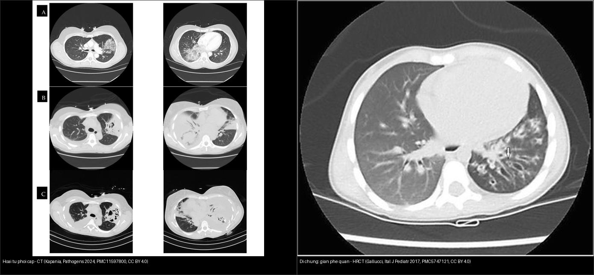
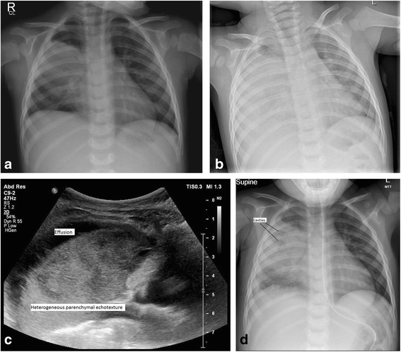
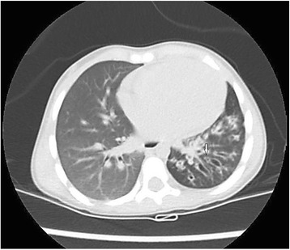
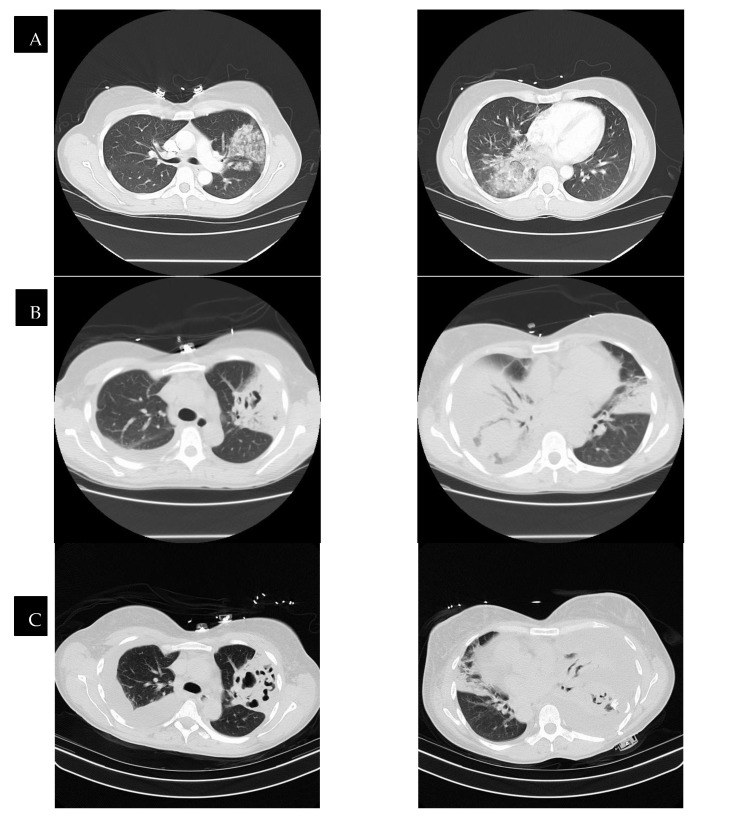
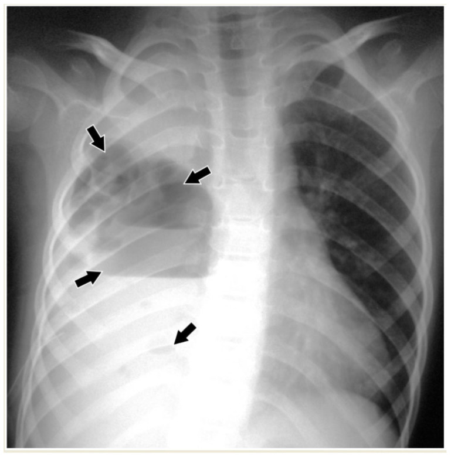
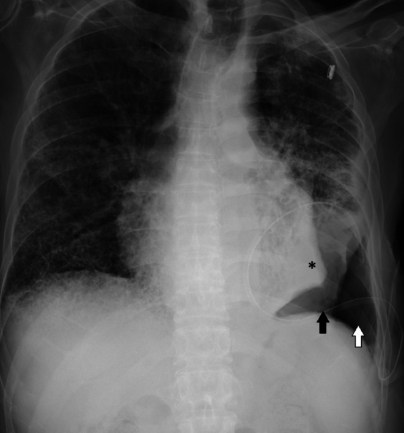

619 — Di chứng hô hấp sau hoại tử phổi & cắt thùy ở trẻ: giãn phế quản, phổi bó / Long-term respiratory sequelae after necrotizing pneumonia & lobectomy in children
Tags: pattern:gian-phe-quan pattern:phoi-bo pattern:xo-phoi pattern:day-mang-phoi vung:phoi vung:mang-phoi protocol:HRCT protocol:HRCT-thi-tho-ra score:spirometry
Mức chắc chắn (certainty): tổng hợp y văn (literature synthesis) — nhóm tự biên từ y văn mở (CC BY 4.0, CC BY-NC 4.0); các ca minh họa giữ đúng tuổi/mô tả của bài gốc (ca nguyên văn).
Đây là bước tiếp theo của 616 – Biến chứng viêm phổi nhi: empyema & hoại tử phổi và 614 – BO & Swyer–James: qua giai đoạn cấp (hang, mủ màng phổi, rò khí), câu hỏi đổi thành "phổi có hồi phục hoàn toàn không, còn lại di chứng gì ở mốc 6–9 tháng, và chức năng hô hấp ra sao?".
1. Tổng quan bệnh học – cơ chế hình ảnh
- Hoại tử phổi (necrotizing pneumonia — NP) và tràn dịch cạnh phổi (parapneumonic effusion — PPE) gặp ở ~3% trẻ viêm phổi mắc phải cộng đồng (CAP) [Pediatr Pulmonol 2025, PMC12363156]. NP = hoại tử + hóa lỏng nhu mô → nhiều hang mỏng thành nhỏ (< 2 mm vách); hay kèm empyema, rò phế quản–màng phổi (BPF), nang khí (pneumatocele).
- TẠI SAO để lại di chứng (cơ chế → hình ảnh):
- Giãn phế quản (bronchiectasis): hoại tử + nhiễm trùng phá hủy sụn và cơ trơn thành phế quản → phế quản mất khả năng đàn hồi, giãn vĩnh viễn và mất kiểu thon dần (lack of tapering) về ngoại vi. Trên HRCT là dấu nhẫn con dấu (signet ring sign) — phế quản to hơn động mạch đi kèm (tỷ lệ phế quản/động mạch — bronchoarterial ratio, BAR > 1, chấp nhận cả ở nhũ nhi theo thang Brody-II) [Thorax 2014, PMC3963531]. Ba kiểu: hình trụ (cylindrical), dạng búi/cành nho (varicose), dạng nang (cystic) — độ nặng tăng dần.
- Xẹp phổi dính tồn dư (residual atelectasis): xơ hóa + dính màng phổi giữ phổi không nở → mờ đông đặc có mất thể tích (xem học thuyết thể tích, bài 030).
- Phổi bó / phổi không nở (trapped lung / non-expandable lung): màng phổi dày – xơ như vỏ giới hạn sự nở của phổi; khi dẫn lưu dịch/khí, phổi không áp về thành ngực → hình thành tràn khí do giảm thể tích (pneumothorax ex vacuo) và khoang dịch–khí tồn dư dù ống dẫn lưu thông. Trên X-quang là phổi "bó" không nở theo ổ dịch/khí (dấu hoa thị trong ảnh). Siêu âm màng phổi: mất trượt phổi (lung sliding) / dấu phổi đập với AUC 0,81 cho M-mode [Diagnostics 2024, PMC10813923].
- Dày màng phổi (pleural thickening) và dày – co rút rãnh liên thùy sau empyema.
- Ngưỡng định lượng nằm lòng [Pediatr Pulmonol 2025, PMC12363156 — 123 trẻ, trung vị 57 tháng]:
- Di chứng X-quang/CT ở mốc 6–9 tháng: NP 56,41% (44/78) so với PPE 40,0% (18/45) (p = 0,080).
- Thành phần di chứng ở NP: dày màng phổi 41,02% (32), xẹp phổi 26,92% (21), giãn phế quản 3,84% (3), BPF 2,56% (2).
- Spirometry 3 tháng sau ra viện: bất thường ở NP 54,54% (18,18% kiểu hạn chế, 36,36% kiểu hỗn hợp) so với PPE 25,0%; mốc 6–9 tháng hồi phục bình thường 87% ở cả hai nhóm. Đa số di chứng X-quang tan trong 2–13 tháng, chỉ 10,25% còn di chứng dài hạn.
- Sau cắt thùy phổi ở trẻ (bẩm sinh hoặc do hủy hoại): gộp 10 nghiên cứu, FEV₁% trung bình 80,09% (KTC 95%: 75,03–85,16) → rối loạn thông khí tắc nghẽn nhẹ; rối loạn đường thở nhỏ (TPTEF/TE, PF/V25%) rõ 1 tháng sau mổ; trẻ CLM nhỏ tuổi thường chức năng phổi bình thường, thời điểm mổ không ảnh hưởng [BMJ Paediatr Open 2023, PMC10582896; Front Pediatr 2021, PMC8578933].

Trái: hoại tử phổi cấp — CT chuỗi thời gian, hang mỏng thành/giảm ngấm tiến triển rồi co lại theo điều trị (Kapania EM et al., Pathogens 2024, PMC11597800, CC BY 4.0). Phải: di chứng giãn phế quản — HRCT trẻ 3 tuổi, các phế quản hình trụ giãn ở thùy dưới trái, mũi tên chỉ dấu nhẫn con dấu (signet ring sign) (Gallucci M et al., Ital J Pediatr 2017, PMC5747121, CC BY 4.0). Ảnh ghép letterbox giữ nguyên tỷ lệ.2. Mẫu hình + chẩn đoán phân biệt theo mốc theo dõi (Gamut)
- Theo MỐC thời gian sau đợt cấp:
- Giai đoạn cấp (< 4–6 tuần): hang khí, nang khí (pneumatocele), mủ màng phổi, rò khí — còn thay đổi, chưa gọi là di chứng.
- Trung hạn (3–6 tháng): đa số co nhỏ – tan dần; spirometry có thể hạn chế/hỗn hợp rồi hồi phục.
- Muộn (6–9 tháng trở đi): phần không hồi phục = di chứng thật (giãn phế quản, xẹp dính, dày màng phổi, BPF).
- Theo MẪU HÌNH HRCT:
- Phế quản giãn: signet ring / tram-track, mất thon dần, dày thành phế quản → giãn phế quản.
- Giảm tỷ trọng thì thở ra không xẹp: ứ khí/bẫy khí (air trapping) → bệnh đường thở nhỏ (nối bài 614).
- Mất thể tích + mờ đông đặc co kéo: xẹp phổi dính.
- Theo BỐI CẢNH để loại nguyên nhân khác của giãn phế quản: xơ nang (CF, mồ hôi), loạn vận động lông (PCD, nitric oxide mũi thấp + viêm mũi–xoang), suy giảm miễn dịch (IgG/IgA), dị vật đường thở (giãn phế quản một bên đột ngột → soi!), hít sặc [Ital J Pediatr 2017, PMC5747121].
- Theo vị trí: giãn phế quản sau NP khu trú vùng hoại tử cũ (thường thùy dưới) khác giãn phế quản lan tỏa hai bên của CF/PCD.
3. Bảng so sánh phân biệt (ma trận đối chiếu)
| Thực thể (entity) | Hình ảnh điển hình (HRCT/CT) | Chốt vào (rule-in) | Chốt loại (rule-out) | Gợi ý xác nhận |
|---|---|---|---|---|
| Giãn phế quản sau nhiễm trùng (post-infectious bronchiectasis) | Phế quản to hơn động mạch đi kèm, mất thon dần; hình trụ → búi → nang; mũi tên signet ring | BAR > 1 (signet ring) + mất thon dần ở vùng phổi đã hoại tử | Phế quản thon dần bình thường theo mạch máu → không giãn | HRCT lát mỏng; đối chiếu phổi lành xa tổn thương |
| Xẹp phổi dính tồn dư (residual atelectasis) | Mờ đông đặc + mất thể tích, co kéo rãnh/phế quản thùy | Mất thể tích + co kéo dấu hiệu phổi lành | Mờ không mất thể tích → đông đặc, không xẹp | So phim cũ; CT thì hít vào/thở ra |
| Phổi bó / không nở (trapped lung) | Phổi không áp thành ngực, pneumothorax ex vacuo, dịch–khí tồn dư dù ống thông | Phổi không nở lại sau dẫn lưu + màng phổi dày xơ; mất trượt phổi trên siêu âm | Phổi nở hết sau dẫn lưu → tràn khí/dịch đơn thuần | Siêu âm màng phổi (M-mode AUC 0,81); CT sau dẫn lưu |
| Dày màng phổi (pleural thickening) | Dày lá màng phổi ngấm thuốc, ± co rút lồng ngực | Dày màng phổi tồn tại > 6 tháng ở vùng empyema cũ | Dịch màng phổi tự do, màng phổi mỏng → chưa di chứng | CT ngực sau tiêm; so 2 bên |
| Rò phế quản–màng phổi tồn dư (BPF) | Đường thông phế quản–khoang màng phổi, khí dai dẳng dù kẹp ống | Khí/rò ngay khi kẹp ống (DIPAL) + đường thông thấy được | Rò hết khi tối ưu dẫn lưu → rò ngoại vi tạm thời | CT lát mỏng; nội soi phế quản (bài 618) |
| Nang khí tồn dư (pneumatocele) | Nang thành mỏng, chứa khí, thường đỉnh hang cũ | Nang thành rất mỏng, co nhỏ theo tháng | Nang thành dày + mức khí–dịch → áp-xe/hang hoạt động | CT chuỗi; X-quang lặp |

Diễn tiến hoại tử phổi ở trẻ 2 tuổi (sốt, ho 4 ngày, dịch màng phổi dương tính kháng nguyên phế cầu): (a) phim đầu; các panel sau cho thấy hang hoại tử + mủ màng phổi tiến triển rồi cải thiện dưới dẫn lưu/kháng sinh — biết mốc để phân biệt đang hồi phục với di chứng cố định. Masters IB et al., Pneumonia 2017 (PMC5525269), CC BY 4.0.4. Protocol + theo dõi chức năng + flowchart
- Theo dõi hình ảnh: X-quang ngực lúc ra viện rồi lặp nếu còn bất thường; CT/HRCT ngực khi nghi di chứng (giãn phế quản, phổi bó, BPF). HRCT lát mỏng + chuỗi hít vào–thở ra (đánh giá ứ khí) và nghiệm pháp nằm sấp khi phân vân tổn thương cố định vs dịch.
- Chức năng hô hấp (spirometry — bắt buộc theo dõi): đo ở mốc 3 tháng, 6–9 tháng rồi theo triệu chứng.
- Kiểu hạn chế: FVC% thấp (dưới giới hạn dưới 5% theo tuổi/giới).
- Kiểu tắc nghẽn: FEV₁/FVC thấp; mức độ theo FEV₁% (80–100% bình thường, 60–79% nhẹ, 40–59% trung bình, < 40% nặng).
- Hỗn hợp: cả hai. Bổ sung khí phế dung (TLC), DLCO%, và test đi bộ 6 phút khi tổn thương rộng.
- Hệ thống phân độ chức năng & di chứng: FEV₁% gộp sau cắt thùy ở trẻ ≈ 80,09% (rối loạn tắc nghẽn nhẹ) [PMC10582896]; di chứng X-quang NP 56,41% / PPE 40,0% [PMC12363156].
- Xử trí di chứng: kỹ thuật làm sạch đường thở (airway clearance), kháng sinh đợt cấp, azithromycin dự phòng ở giãn phế quản không-CF có đợt cấp tái diễn; vaccine cú phế cầu; phẫu thuật (cắt thùy phổi bị hủy hoại) chỉ khi tổn thương khu trú + triệu chứng dai dẳng.
flowchart TD
A[Hoai tu phoi / PPE da qua giai doan cap] --> B[Ra vien: X-quang nguc + danh gia lam sang]
B --> C{X-quang con bat thuong sau 4-6 tuan?}
C -->|Khong| D[Theo doi lam sang + spirometry moc 3 va 6-9 thang]
C -->|Co| E[HRCT nguc lat mong ± thi tho ra]
E --> F{Mau hinh chot?}
F -->|Signet ring / mat thon dan| G[Gian phe quan: lam sach duong tho + azithromycin; tim nguyen nhan khac]
F -->|Mat the tich + co keo| H[Xep phoi dinh: VPT hoi phuc chuc nang]
F -->|Phoi khong no lai + mang phoi day| I[Phoi bo / trapped lung: tranh dat lai nhieu lan; can thiep mang phoi chon loc]
F -->|Khi + duong thong phe quan| J[BPF: xem bai 618]
D --> K{Spirometry moc 6-9 thang}
K -->|Binh thuong 87%| L[Theo doi dinh ky, danh gia lai neu trieu chung]
K -->|Han che / tac nghen / hon hop| M[VPT phoi + airway clearance + kiem soat dot cap; theo doi dai han]
5. Biến thể bình thường và cạm bẫy
- Đừng gọi "giãn phế quản" quá sớm trong giai đoạn cấp: phế quản có thể giãn thoáng qua do viêm/đông đặc quanh nó, tự hồi phục sau vài tháng → chỉ chốt di chứng ở mốc ≥ 6–9 tháng.
- Nang khí (pneumatocele) thoái triển là bình thường, không đồng nghĩa hủy hoại vĩnh viễn; ngược lại hang thành dày + mức khí–dịch mới là tổn thương hoạt động.
- Phổi bó (trapped lung) ≠ tràn khí tồn dư: nếu phổi không nở lại kèm màng phổi dày xơ và mất trượt phổi → đừng đặt lại ống dẫn lưu nhiều lần vô ích.
- Cạm bẫy mặt cắt: một ổ dịch–khí trong khoang màng phổi khu trú dễ bị đọc nhầm là hang/áp-xe nhu mô — phân biệt bằng vị trí khoang màng phổi (đẩy phổi, đổi theo tư thế); xem thêm quy tắc dịch màng phổi vs cổ trướng ở các bài bụng.
- Đừng bỏ sót nguyên nhân khác: giãn phế quản một bên đột ngột → dị vật đường thở (soi); hai bên lan tỏa → CF/PCD/suy giảm miễn dịch (sweat test, NO mũi, IgG/IgA).
- Cắt thùy ở trẻ không "hủy" chức năng phổi: gộp lại chỉ rối loạn tắc nghẽn nhẹ (FEV₁% ≈ 80%), trẻ CLM nhỏ thường bình thường — trấn an nhưng vẫn theo dõi.
6. Tự lượng giá — Blind Quiz
Ca 1 — Trẻ 2 tuổi, sốt 4 ngày, ho, thở rít ngắt quãng; dịch màng phổi dương tính kháng nguyên phế cầu. Nhìn chuỗi phim trước, mô tả trước.
- Hỏi: mẫu hình chính là gì? Đây là tổn thương cấp còn thay đổi hay đã là di chứng? Vì sao?
Bấm để hiện đáp án (findings + chẩn đoán)
- Dấu hiệu: các panel cho thấy hang hoại tử mỏng thành + mủ màng phổi thay đổi rõ theo thời gian (tiến triển rồi co nhỏ dưới dẫn lưu/kháng sinh).
- Chẩn đoán: hoại tử phổi (NP) + tràn dịch cạnh phổi ở giai đoạn cấp — còn thay đổi, chưa gọi là di chứng; chỉ xác định di chứng ở mốc 6–9 tháng. Nguồn: Masters IB et al., Pneumonia 2017 (PMC5525269), CC BY 4.0.
Ca 2 — Trẻ 3 tuổi, ho có đờm mạn, đáp ứng giãn phế quản âm. HRCT ngực thùy dưới trái:

- Hỏi: mũi tên chỉ dấu gì? Tiêu chuẩn định lượng nào xác nhận?
Bấm để hiện đáp án (findings + chẩn đoán)
- Dấu hiệu: các phế quản to hơn động mạch đi kèm, mất thon dần về ngoại vi — mũi tên chỉ dấu nhẫn con dấu (signet ring sign).
- Chẩn đoán: giãn phế quản (post-infectious). Chốt bằng tỷ lệ phế quản/động mạch BAR > 1. Nguồn: Gallucci M et al., Ital J Pediatr 2017 (PMC5747121), CC BY 4.0.
Ca 3 — Trẻ hoại tử phổi đang điều trị, CT ngực chuỗi theo thời gian:

- Hỏi: hàng (D) khác gì các hàng trước? Vùng giảm ngấm nghĩ tới gì?
Bấm để hiện đáp án (findings + chẩn đoán)
- Dấu hiệu: các hàng A–C cho thấy đông đặc giảm ngấm + hang hóa lỏng (hoại tử); hàng (D) — sau khi hoàn tất điều trị — co nhỏ/cải thiện.
- Chẩn đoán: hoại tử phổi; vùng giảm ngấm không tăng dần = nhu mô hoại tử/mất tưới máu. Nguồn: Kapania EM & Cavallazzi R, Pathogens 2024 (PMC11597800), CC BY 4.0.
Ca 4 — Trẻ 8 tuổi viêm phổi biến chứng, X-quang + CT ngực:

- Hỏi: mô tả dấu hiệu chính? Phân biệt hoại tử phổi với áp-xe đơn thuần?
Bấm để hiện đáp án (findings + chẩn đoán)
- Dấu hiệu: X-quang mờ đặc nửa ngực phải + vẹo cột sống lõm về bên tổn thương + nhiều hang; CT xác nhận đông đặc có nhiều ổ hang mỏng thành.
- Chẩn đoán: hoại tử phổi (NP) — nhiều hang nhỏ mỏng thành khác áp-xe đơn độc (một hang lớn, thành dày hơn). Nguồn: Alexopoulou E et al., Children 2024 (PMC10814200), CC BY 4.0.
Ca 5 — Trẻ sau viêm màng phổi mủ/dẫn lưu, X-quang ngực kiểm tra:

- Hỏi: các mũi tên/dấu hoa thị chỉ gì? Vì sao phổi không nở lại?
Bấm để hiện đáp án (findings + chẩn đoán)
- Dấu hiệu: X-quang cho thấy phổi bó (dấu *), tràn khí do giảm thể tích (pneumothorax ex vacuo, mũi tên trắng) và dịch–khí (mũi tên đen).
- Chẩn đoán: phổi không nở (non-expandable / trapped lung) — màng phổi dày xơ giữ phổi không áp thành ngực; phổi không nở lại sau dẫn lưu. Nguồn: Ali MB et al., Clin Case Rep 2026 (PMC12950998), CC BY 4.0.
Bài liên quan chéo
- 600 – Tổng quan Hệ Nhi khoa
- 616 – Biến chứng viêm phổi nhi: empyema & hoại tử phổi (giai đoạn cấp — bước trước)
- 618 – Rò phế quản–màng phổi & rò khí dai dẳng ở trẻ (di chứng BPF)
- 614 – Bệnh tiểu phế quản tắc nghẽn (BO) & Swyer–James (ứ khí/bệnh đường thở nhỏ)
- 613 – Viêm tiểu phế quản ở nhũ nhi (RSV)
- 030 – Đông đặc – xẹp phổi (học thuyết thể tích)
- 035 – Xơ mô kẽ UIP vs NSIP & tổ ong (giãn phế quản co kéo do xơ)
Ảnh
- Xem
images/CREDITS.md. Ảnh CC BY 4.0 được phép ghép letterbox (composite); ảnh CC BY-NC-ND 4.0 (nếu dùng) giữ nguyên bản.
Không dùng để chẩn đoán độc lập khi chưa có người hướng dẫn.